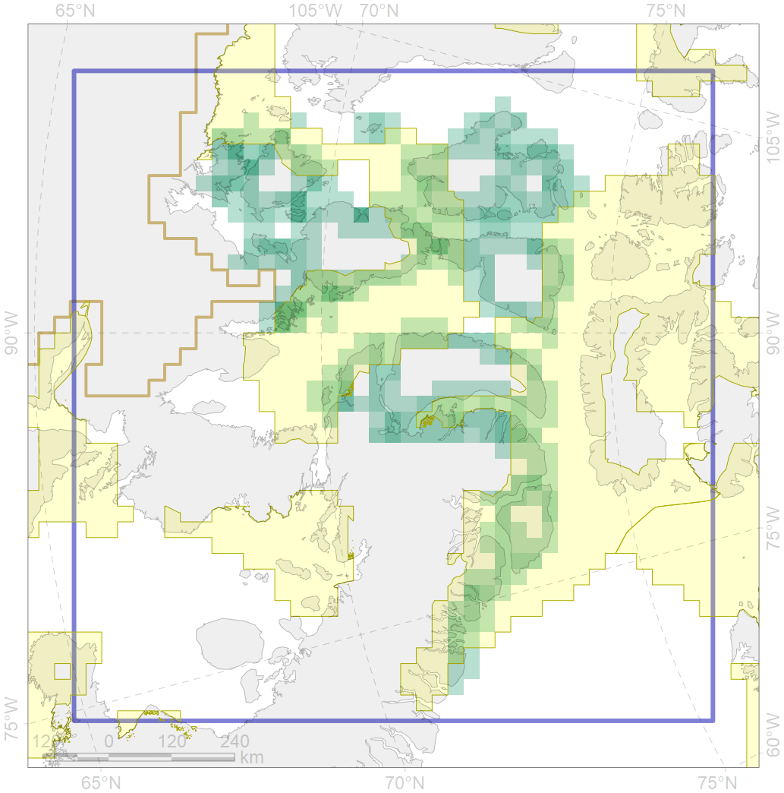
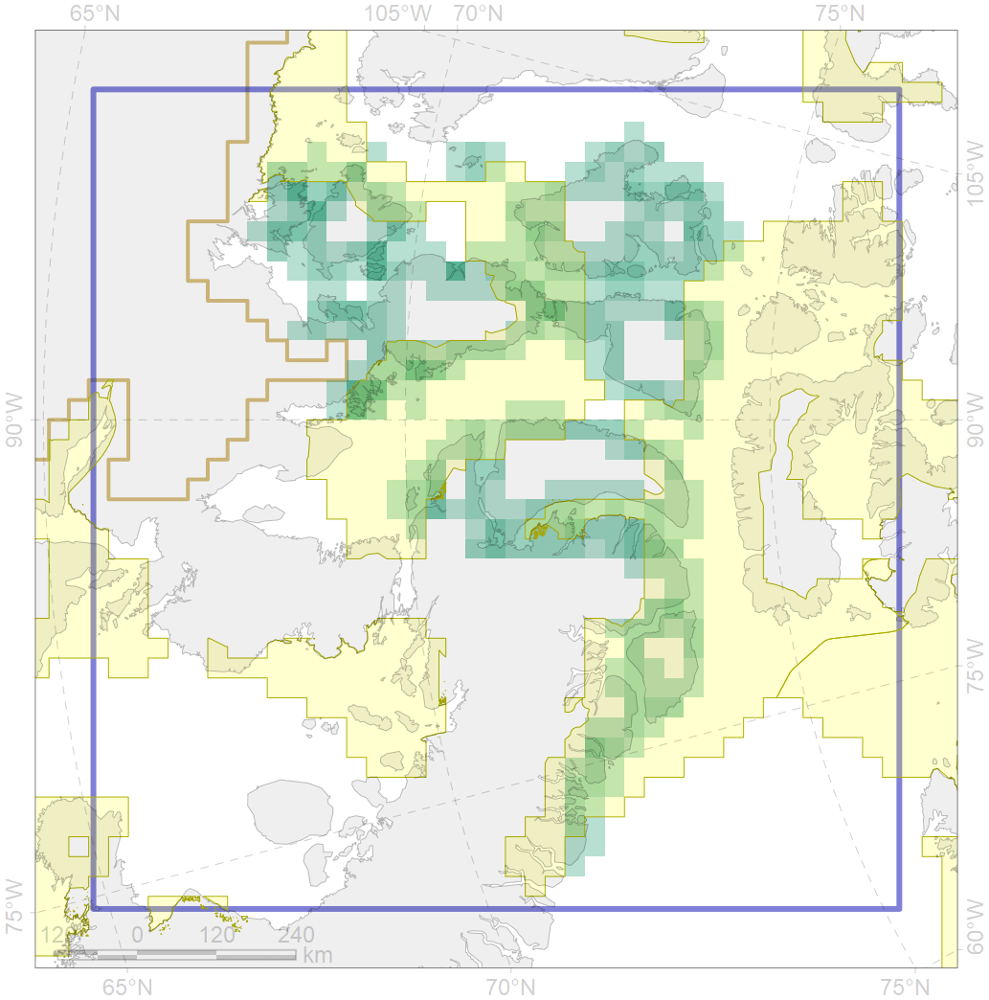

6007
 

| CF code | 6007 |
| CF name | Brent goose (Branta bernicla hrota) Atlantic breeding&moulting grounds |
| Time Period | 2001 |
| Source(s) | Denny 2004 |
| Seasonality | June-September |
| Depth Horizon | ≥0 m |
| Methodology | Field Data |
| Use Restrictions | Open source |
| Author Name | Gavrilo, Tertitski |
| Notes | |
| Scenario’s Target | 0.18 |
| Target Achievement | 0.478 (Scenario: 265.5%) |
| PAC | Share of the Total Amount within the PAC | Share of the Target Achievement for the ArcNet | PAC’s Contribution to the Target Achievement |
|---|---|---|---|
| 52 | 20.2%20.8% | 109.3%113.0% | 41.2%42.6% |
| 65 | 25.9%26.8% | 128.6%132.0% | 48.4%49.7% |
| inner | 46.1%47.6% | 237.9%245.0% | 89.6%92.3% |
| outer | 53.9%66.3% | 27.5%89.4% | 10.4%33.7% |
| † supplement values are for area consistence whereas principal values are for Accenter compatible gridded stats |